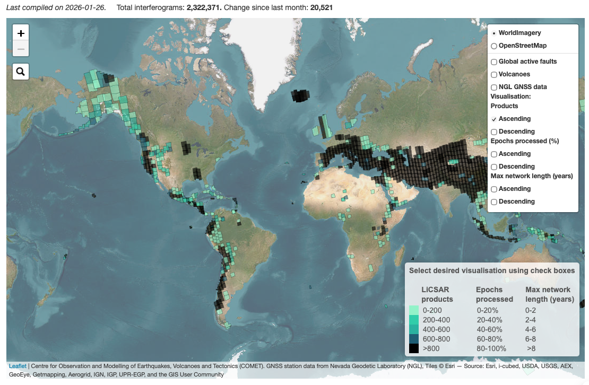
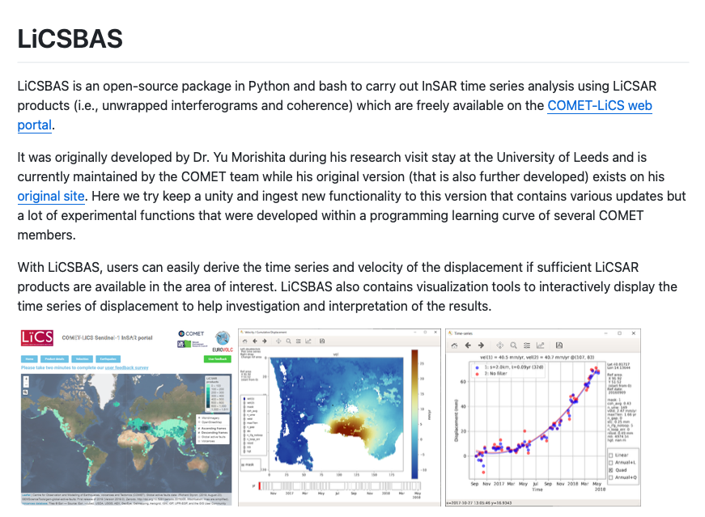
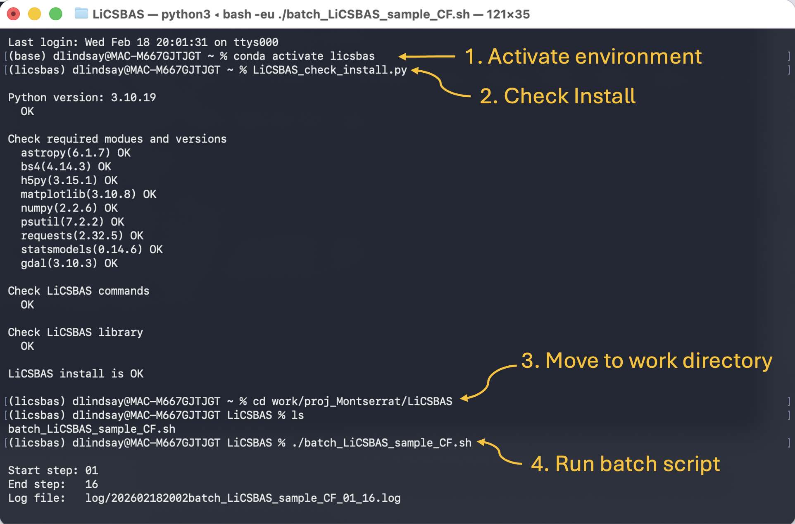
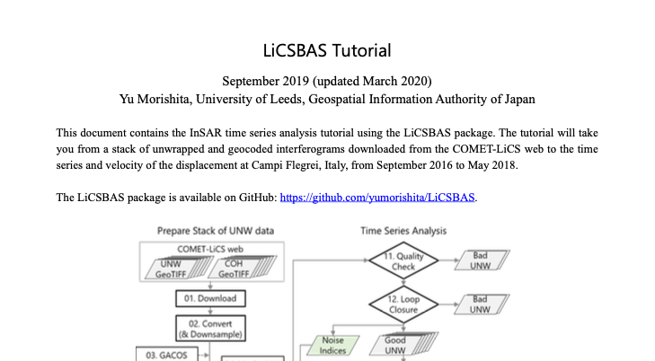

Time Series with LiCSAR + LiCSBAS
Disclaimer
This page was assembled by Claude (Anthropic) drawing on Dani Lindsay's thesis work, research notes, and guidance. It has not yet been through a final review — if you see this notice, treat the content as a useful starting point but verify anything you plan to cite or act on.
This workflow builds a displacement time series using LiCSAR pre-processed interferograms and the LiCSBAS time series analysis toolkit.
Background
To monitor deformation through time, many interferograms are combined to generate displacement time series. This improves signal-to-noise and resolves subtle signals that evolve slowly — such as gradual inflation, interseismic strain, or slow landslide creep — over periods of weeks to years.
A primary data source for this workflow is the automated processing system developed by the Centre for the Observation and Modelling of Earthquakes, Volcanoes and Tectonics (COMET) at the University of Leeds. COMET produces Sentinel-1 interferograms for volcanic and tectonic regions worldwide, distributed through the LiCSAR system:
https://comet.nerc.ac.uk/COMET-LiCS-portal/
LiCSAR products are processed with GAMMA and delivered in a consistent geographic reference frame, making them well suited for time series analysis without requiring you to run full interferometric processing yourself.
For time series generation, LiCSAR products integrate directly with LiCSBAS — an open-source toolkit for constructing displacement time series, velocity maps, and quality metrics from LiCSAR interferogram stacks.

COMET-LiCS: Sentinel-1 InSAR portal.
Pros and cons
Pros: Fixed geographic frame, pre-processed stacks ready to use, well-documented pipeline.
Cons: Processing runs on a quarterly cycle, so there is a delay between data acquisition and updated products being available.

LiCSBAS time series output.
LiCSBAS Installation (Ubuntu / Linux)
These instructions install LiCSBAS using a Conda environment — the recommended method as it handles all dependencies automatically.
1. Install Miniconda
Warning
Only do this once. Check if you already have Conda installed (conda --version) before proceeding.
mkdir -p ~/tools && cd ~/tools
wget https://repo.anaconda.com/miniconda/Miniconda3-latest-Linux-x86_64.sh
bash Miniconda3-latest-Linux-x86_64.sh
Restart your terminal, then verify:
2. Clone LiCSBAS
3. Create and activate the Conda environment
You should see (licsbas) at the start of your terminal prompt.
4. Add LiCSBAS to your PATH
Add the following to ~/.bashrc, replacing the path with your output from above:
export LiCSBAS=~/tools/LiCSBAS
export PATH=$PATH:$LiCSBAS/bin
export PYTHONPATH=$PYTHONPATH:$LiCSBAS/LiCSBAS_lib
Reload:
5. Test the installation
If the command and library checks pass, you are ready to go.

Successful LiCSBAS install check output.
Troubleshooting
If you encounter errors, the most reliable fix is: quit the terminal, reopen, reactivate the environment, and re-run the install check.
If the PATH check fails, verify that the path you added to .bashrc matches the output of pwd in your LiCSBAS directory.
Training
With the software installed, follow the tutorial "LiCSBAS_sample_CF.pdf" available on GitHub.
You can skip section 1 (Preparation) — the install instructions above cover it. Start at "2. Quick Start".

LiCSBAS tutorial document.
Acknowledgements
When using LiCSAR data, include the following acknowledgement:
"LiCSAR contains modified Copernicus Sentinel data [year] analysed by the Centre for the Observation and Modelling of Earthquakes, Volcanoes and Tectonics (COMET). LiCSAR uses JASMIN, the UK's collaborative data analysis environment (http://jasmin.ac.uk)."
Key citations:
Lazecký, M. et al. (2020). LiCSAR: An Automatic InSAR Tool for Measuring and Monitoring Tectonic and Volcanic Activity. Remote Sensing.
Morishita, Y. et al. (2020). LiCSBAS: An Open-Source InSAR Time Series Analysis Package Integrated with the LiCSAR Automated Sentinel-1 InSAR Processor. Remote Sensing, 12, 424.
See Acknowledging LiCSAR products for full citation guidance.